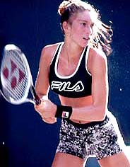
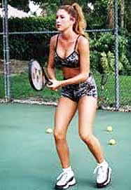
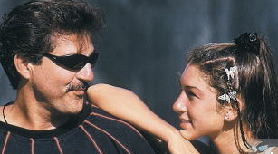

Previous: The Strange Saga of Monique and the Donald - Part 1 | 🏠 Famous Coaches Home | Next: The Three Forehand Finishes
The Strange Saga of Monique and the Donald: Part 2
Comprehensive unified tennis knowledge base — Fundamentals, Stroke Analysis, Reference Library, and more
The Strange Saga of Monique and the Donald: Part 2
Rick Macci
After betting on her to win, Monique's stock went up in the Trumpster's eyes.
After her first big money win at Donald Trump's Florida resort, it was kind of funny how Monique's stock went up in his eyes and how mine went up too. (Click Here for Part 1 in this saga.) Whenever anyone was around, the Trumpster would start saying, "Rick's the best. Rick's the best." At least I lost the "hey pal" label.
So the very next week Trump went to make another bet, but this time with the same 45 year old guy from the East playing Monique's hitting partner. The hitting partner at the time was No. 170 in the world. That's a pretty darn good hitting partner.
This time I bet that the Eastern guy wouldn't get more than four games. Everybody jumped on the bet that this guy would get more than four games for sure. The bets were flying, hundreds of dollar bills on this bet.
I told Bo, the hitting partner, "I not only want you to beat him, I don't want you to take any chances. I just want you to keep it going and I want you to run the guy. Just keep running him and running him and torture him. And if you don't let him get a game I'll give you half of the bet.
"You could win $300," I told him. To Bo, that was like $3,000. I told Donald, "You should up the ante. You should take it as far as he won't get more than a game a set." I saw how the guy served and he wasn't going to get aces on Bo.
Once the point started, on clay, against a guy No. 170 and he's a guy who's ranked No.1 in the east in the 45's? Good night. It ain't gonna happen. Game, set, match. Bo!
Luckily there was a spa at Mar-A-Lago.
Bo wins the first set 6-0 and is up 3-0 in the second and the guy has to retire. They have to call the paramedics (I'm serious) because the guy is cramping. He has a full body cramp from the neck to the calf.
Lucky that Mar-A-Lago has a spa. The guy is in the spa all day getting put back together like the scarecrow in the Wizard of Oz. He needed rewiring physically and mentally.
Donald wins hundreds if not thousands on the bet and he's going around again saying, "Never bet against the Trumpster. I know tennis." It was the funniest thing because it was like the most important thing to him.
He just lasers in on one thing -- big or small -- and makes it like the Super Bowl. That is why he is so successful.
So while T Management is working to get Monique some off-court opportunities, I'm in the negotiations with racquet companies and some clothing companies, mainly Fila and Nike.

Fila signed Monique on a napkin at 11:30pm.
I created a presentation of her capabilities as an athlete, while showcasing her obvious good looks. I remember Nike's head of international promotions saying, "You should come and work for us. This portfolio you put together of her dunking a basketball and serving a volleyball and on a skateboard is awesome."
I also knew Viele was an Italian name and Fila is out of Italy. Since I'm good friends with Fila's international promotional executive Marty Mulligan, I also go to them. They all saw her play and saw the other off-court things and what publicity it was generating, so at the U.S. Open I had these back and forth discussions.
One time, I'm with Nike and then Fila and then Nike and then Fila. Finally I said, "We're going to be doing the deal tonight." We met the people from Italy at 11:30pm in a hallway and wrote it on a napkin.
Bernard Diamond and I agreed in principle to terms of the contract for Monique. It was guaranteed $1.8 million for three years, $600,000 a year ... and she was 15 years old!
Before she ever hit a ball on the pro tour she got one of the biggest endorsement deals ever. Then she got a six-figure racquet deal with Yonex. The next day I met with Donald at his office and once again his line "Rick's the best!" comes out. It should, I just made him $180,000!

Before she hit a ball in a pro tournament Monique was worth millions in endorsement deals.
So the stage was set for her to be able to travel and play and have the money to do that. She was going to make her debut in Japan. I got her a wild card into the Princess Cup. I thought she would do well.
She was having many people follow her at the tournament. People saw a lot of potential or there was a lot of hype and publicity about her. And I didn't know what was going to happen other than she had good groundstrokes and she could hang with girls in the top 100 and her serve was good.
She goes out there and I'm totally blown away how she just freaked out. At 3-all in the first set she just got paralyzed, couldn't run, couldn't hit, made errors. She usually bounced the ball three times on her serve. One time she bounced it 18 times. She was hyperventilating and she got a delay-of-game warning. And I'm thinking, what the heck?
I said right then and there she wasn't wired like Venus or Serena or Jennifer. She might have some juice and fire power but mentally there are some things that are going to take awhile, if they were ever going to happen!
She comes back to the United States and she has to play some $25,000, $50,000 and $75,000 lower-level events and she's losing matches, winning matches, getting her ranking into the 300s.

Endorsements, but how was Monique wired?
And then out of nowhere her father, who was a very good friend of mine, who's Mr. Health and Nutrition, who never drinks soda, never eats certain meats, drinks so much water, is fit as a fiddle, is always telling me, "Why are you drinking that Coke? Don't do that, you should be doing this." Then out of nowhere, he gets sick.
He has cancer. He'd always been against the medical profession, so he does this holistic approach to try to combat it. He does this for three months, which is the wrong thing to do. And by the time he goes to a regular doctor, half his stomach is gone.
Many months later, he died. He was 225 pounds, made of steel and in six months he died. He was 47 years old.
It was so rattling to Monique and her whole family, as it would be to anybody. But this was a very unique situation because Rick Viele was a very controlling, dominant parent.
Even more than a Richard Williams or a Jim Pierce or a Stefano Capriati. I wouldn't say he was a dictator but he very much controlled every move from A to V, as in Viele. How that affected his daughter was traumatic.
She didn't want to play anymore. She didn't have the desire to play. She lost motivation and when she tried to come back she didn't want to come back. Plus she had wrist surgery and the whole thing got lopsided and just blew up.

Monique and her dad, Rick.
It was sad because no doubt she could have been a top 50 player, guaranteed. It would have taken some time. She had groundstrokes that were solid and she had a great serve. I think the mental part you learn last and she just didn't have that at a young age.
And the hype and publicity superceded the talent, no doubt. Monique had so much more inside of her as a tennis player. But her father's situation changed the road map in her career and her life.

Rick Macci has coached some of the greatest players in the modern game during their critical, formative years. He is widely regarded as one the world's top developmental coaches. Rick and his staff have shaped the strokes of Jennifer Capriati, Venus and Serena Williams, Andy Roddick, and dozens of other successful tour players. In the last 30 years, Macci students have won 134 USTA national junior championships, and have been awarded over 4 million dollars in college scholarships. Rick is a USPTA Master Pro and a member of the USPTA Florida Hall of Fame.
The Rick Macci Academy is located in Boca Raton, Florida at the beautiful Boca Logo Country Club, where Rick works in collaboration with Dr. Brian Gordon in implementing their new world class training system.
For more information about Rick's Academy, email him at: info@rickmacci.com or call Rick Macci directly at: (561) 445-2747
a
Source: tennisplayer.net archive — The Strange Saga of Monique and the Donald - Part 2.docx (John Yandell teaching library, 2002-2022). Extracted and rendered as HTML for Tennis Future Lab.